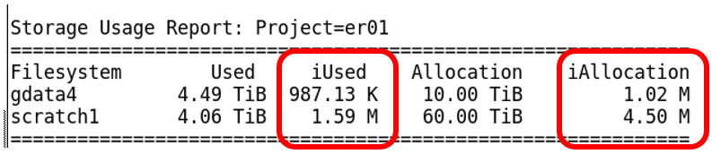

Accounting
Introduction
The main challenges users may face adapting Artemis workflows to Gadi are:
- Understanding NCI accounting of KSU, disk and iNode limits
- Gadi walltime limit of 48 hours
- Adjusting PBS directives to suit Gadi requirements and queue structure
- Lack of internet access for Gadi compute nodes
- Data transfer
- Automatic 100-day Gadi /scratch purge policy
- Software installation and version upgrades on Gadi
- Job arrays not supported on Gadi
In this section, we will look at the first challenge on this list. For the remaining challenges, please visit the specific linked content. We will run training sessions on some of these during the lead up to the Artemis decommission date.
What are the important accounting metrics?
- Service units: The charge rate per resource hour
- Disk usage: The amount of physical disk space used on scratch, home, and gdata
- iNode usage: The number of files and directories stored on scratch, home, and gdata
Service units
For a detailed description of the NCI SU and why 1 SU does not equal 1 CPU hour, see here
For every resource hour you consume on an NCI compute platform, you are charged at a specific rate. As a simple example the normal queue on Gadi has a charge rate of 2, so a job using 1 CPU for 1 hour will be charged 2 SU.
We often speak in KSU (1 KSU = 1,000 SU) for simplicity. Under the Sydney Scheme, you can easily request more KSU as you need it from the management portal.
Before submitting a job on Gadi, it is important to:
- Calculate the amount of SU the job will require
- Check your available SU to ensure there is sufficient for the job to run
Calculate the amount of SU the job will require
In the simple example above, we decided that our 1 CPU 1 hour normal queue job would cost 2 SU. There is actually another factor to consider, and that is memory. Each queue has nodes of a specific CPU:memory ratio, and if your job consumes more memory than this ratio allows, you will be charged based on the memory used. From the NCI job costs page:
“However, some jobs will request less CPUs and more memory. When this happens, you are taking memory away from the other CPUs in the node and will be charged accordingly, as other users can’t access those CPUs while your job is using that memory allocation”
So let’s assume our 1 CPU job requests 12 GB memory. Checking the Gadi queue structure page, under the Intel Xeon Cascade Lake dropdown, the normal nodes have the following hardware:
- 2 x 24-coreIntel Xeon Platinum 8274 (Cascade Lake) 3.2 GHz CPUs per node
- 192 GiB RAM per node
From here we can determine that the CPU:mem ratio is 48:192 = 1:4 (1 CPU per 4 GB mem). By requesting 12 GB mem for our 1 CPU job, we are using 3 times as much mem per CPU as the ratio governs for this queue. So, we are likewise charged 3 times as much, or in other words, we are charged based on the MEMORY rather than the CPU.
The equation for every job run on Gadi is charged using the formula:
SU = Queue Charge Rate ✕ Max (NCPUs, Memory Proportion) ✕ Walltime Used (Hours)For our example, this expands to:
SU = 2 charge rate X 3 memory proportion X 1 hour
SU = 6Challenge 1: calculate this job’s SU cost
Use the queue limits and queue structure pages to help find the answer.
#PBS -P MYPROJECT
#PBS -l walltime=02:00:00
#PBS -l ncpus=4
#PBS -l mem=48GB
#PBS -q normal
#PBS -W umask=022
#PBS -l wd
#PBS -l storage=gdata/MYPROJECTFirst, we need to calculate the CPU:mem ratio of our job, which in this case is 4:48 = 1:12, ie 12 GB mem requested per CPU requested.
Next, we need to check that against the queue hardware: These nodes have 48 CPU and 192 GB RAM. So the CPU:mem ratio for this queue is 48:192 = 1:4 ie 4 GB RAM per CPU. By requesting 12 GB mem per CPU, we have requested 3 times as much mem per CPU than the queue hardware provides for, so we will be charged based off the mem not the CPU, ie instead of being charged based on 4 CPU, we will be charged for the CPUs assigned to 48 GB RAM which is 12 (48 GB mem requested divided by the queue mem per CPU value of 4).
Finally, check the charge rate for the normal queue, which is 2 SU per resource hour.
SU = 2 charge rate X 12 memory proportion X 2 hour
SU = 48Challenge 2: calculate this job’s SU cost
Use the queue limits and queue structure pages to help find the answer.
#PBS -P MYPROJECT
#PBS -l walltime=04:00:00
#PBS -l ncpus=280
#PBS -l mem=2520GB
#PBS -q normalbw
#PBS -W umask=022
#PBS -l wd
#PBS -l storage=gdata/MYPROJECTFirst, we need to calculate the CPU:mem ratio of our job, which in this case is 280:2520 = 1:9, ie 9 GB mem per CPU.
Next, we need to check that against the queue hardware: The broadwell queues (except express) have a charge rate of 1.25 SU per resource hour. The directives have requested the normalbw or “normal Broadwell” queue, which has some nodes with 128 GB RAM and some nodes with 256 GB RAM. There is no difference in the charge rate for these nodes, and jobs are placed on either node type depending on the memory per CPU requested and resource availability at the time. These nodes have 28 CPU per node. So the CPU:mem rato for this queue is either 28:128 or 28:256. Since the 256 GB nodes are charged the same as the 128 GB nodes, we go with the higher ratio, 28:256 = 1:9.14, ie 9.14 GB mem per CPU.
Since we requested a CPU:mem ratio of 280:2520 = 1:9, we have requested less mem per CPU than the queue allows per CPU so our charge rate will be based on CPU not mem.
SU = 1.25 charge rate X 280 CPU X 4 hour
SU = 1400
KSU = 1.4Check your available SU
Once you have established your job script/s and calculated your SU cost, you should check that you have sufficient SU budget to run the job.
Use the below command, replacing the <nci-project-id> with your NCI project code:
nci_account -P <nci-project-id>In the below screenshot, you can see that project qc03 has used 3.24 SU of its 1 KSU allocation (Grant). There are no SU reserved (reserved SU are SU assigned to jobs currently running or in queue) and there are 996.76 SU still available for the rest of the quarter.
In order to run a job under this project code, it would need to have a computed job cost of less than or equal to 996.76 SU.
If a job is submitted under a project that does not have sufficient SU to cover the expected cost, the job will be held. You can reveal the reason for a held job (status = ‘H’) from the “Comment” included in the qstat -f output:

This job requires 19.2 KSU yet we know only 966 SU is available to the project. To run this job, you would need to obtain more KSU.
If the amount by which your job exceeds your current SU budget is small, you may consider reducing the requested resources to fit under the current budget. You can do this by either killing the job (qdel <jobID>), adjusting the resource requests then resubmitting, or use the qalter PBS command to reduce the resource requests of the held job via the command line. For example, to reduce CPU, mem and walltime:
qalter -l walltime=02:00:00 -l ncpus=48 -l mem=190GB <jobid> Completed job SU charged
After your job completes, the SU consumed by the job is reported in the PBS .o job log (<jobname>.o<jobID> unless otherwise changed with the #PBS -o <logname> directive).
The charged is based off the walltime used, not the walltime requested.
In the above example, the job cost 23.94 SU. The job queue is not reported in the log, however this information is of course included in the directives of the job script. This job was run on normalbw which has a charge rate of 1.25 SU, and CPU:mem ratio of 1:9.14. Since the job requested 7 CPU and 63 GB RAM, this is below the mem:CPU ratio so the charge is based off CPU not memory:
SU = 1.25 charge rate X 7 CPU X 2.74 hours
SU = 23.94Disk
New projects are assigned 1 TB disk quota and 202 K inode quota on Gadi’s scratch filesystem, and these can be increased with justification by contacting the NCI help desk.
You can check your project allocation with the same nci_account -P <nci-project-id> command used to query SU:
This project has used 4.5 TB of its 10 TB allocated in scratch.
Another way to check disk usage is with the lquota command, which will report filesystem usage for all projects of which you are a member:
Note the extra columns here - you will see that in addition to the amount of disk used and allocated, there are also Limit columns. This is a grace amount of additional resources that your project may use, but only for a short time. This is to try and help jobs complete that may otherwise have exceeded the allocation and failed, causing unnecessary wastage of compute resources. You cannot submit any new jobs under a project code that has exceeded the limit; the jobs will be held (status H) until you have brought your disk usage back under the allocation quota. Your project cannot exceed the limits. If a running job causes the limit to be exceeded, the job will fail. If a running job exceeds the allocation but remains under the limit, the job will continue.
NCI implements a scratch purge policy, where files not accessed for 100 days are moved into quarantine for 14 days before permanent deletion. Files within quarantine still count towards project quotas.
If you are a member of multiple projects, understand that the filepath of the files and not the group ownership of the files dictates the project to which the disk resources are accounted. Please see this NCI update for more information.
iNodes
An inode (index node) is a data structure used by Unix-like file systems to store metadata about a file or directory. In simple terms, each file and directory contributes an inode count of 1, ie the inode usage of a filesystem is the count of all files and directories stored on that filesystem. Like physical disk space, a filesystem also has an inode limit, and if they get used up (even if there’s still free disk space), you won’t be able to create new files. This can cause failure of a running job.
Most users will not need to worry about inode limit. For each TB of scratch or gdata disk assigned to a project, an amount if inode that is suitable for most users is also provided. If however you run tools or jobs which generate large numbers of tiny files, you may need to implement close inode monitoring and management, such as periodically deleting or archiving tiny temp files as they are no longer needed.
From the Gadi resources page:
“Please try to keep the number of files as low as possible as this can affect the I/O performance in your job. Gadi is efficient at handling large scale parallel I/O but performance becomes significantly worse when doing frequent small operations. A main culprit for creating a large amount of files is the Python packaging system conda. Please use pip and the available modules that are already tuned for Gadi to keep file and folder count as low as possible.”
You can see the inode limits and usage for your project’s scratch and gdata with the nci_account -P <nci-project-id> command:

This project has been allocated (iAllocation) 4.5 million inodes in scratch, and has used (iUsed) 1.59 million inodes. With ~ 3 million inodes spare, there is plenty to continue work.
The lquota command shown previously also reports the inode usage, allocation and limit for all projects of which you are a member. The inode limit functions the same as the disk limit, whereby you can exceed the allocation/quota up to the inode limit, you cannot exceed the inode limit, and you cannot submit new jobs until the project is back under the inode allocation/quota.
If you would like to determine the total inode usage of a specific directory and its subdirectories, run this command from within that directory:
for d in `find -maxdepth 1 -type d |cut -d\/ -f2 |sort`; do c=$(find $d |wc -l) ; printf "$c\t\t- $d\n" ; done ; printf "Total: \t\t$(find $(pwd) | wc -l)\n"Disk and inode usage on /home
Each user has a quota of 10 GB of storage in their home directory, which is private and backed up. They also have an inode allocation of 10,240 M.
Importantly, home directories do not have a grace limit like scratch and gdata do! It is critical to actively monitor and manage your home directory usage to avoid preventable job failures.
The nci_account and lquota commands do not report usage on home. To view disk and inode quota and usage, use the command quota -s:

This user has filled 8643 M of physical space in their home directory, and has 109 K inodes used of the total quota of 4295 M inodes. Note there is no ‘grace’ (limit) value in home; the quotas cannot be exceeded.
Key points
- NCI accounts for disk usage, inode usage, and SU
- It is your responsibility to monitor and manage your usage of these resources as you work
- Use command
nci_account -P <nci-project-id>to check SU of a specific project for the current quarter, as well as disk and inode for that project - Use command
lquotato check disk and inode usage and allocation for all projects you are a member of - Use
quota -sto check disk and inode usage in your home directory - Requests for more SU can be made through the Sydney Scheme management portal
- Requests for more scratch disk and scratch inode can be made through the NCI help desk, and will require justification
- Requests for more gdata disk and gdata inode can be made by emailing the Sydney Scheme manager, and will require justification